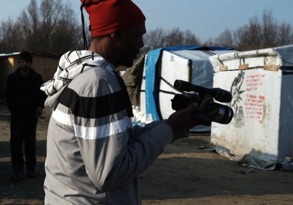

Kalès

Laurent Van Lancker
|
BE
2017 K: Laurent Van Lancker, Khalid Mansour, Anna Savchenko, Guillaume Vandenberghe – S: Rudi Maerten, Laurent Van Lancker – T: Anna Savchenko, Aurélien Lebourg, Laszlo Umbreit – P: Ellen Meiresonne – V: Polymorfilms – Mit Khalid Mansour, Abdel Raouf, Babak Inanloo, Khalid Pacha www.laurentvanlancker.art
|
sonntag 14 okt 18.30 werkstattkino
Eine intime Innenperspektive des „Dschungel” von Calais, erzeugt durch eine Polyphonie aus Menschen, Geschichten und Atmosphären. Eine sinnliche Reise durch das Sozialleben und die Überlebensstrategien von MigrantInnen. Ein Film über Wind und Verzweiflung, Feuer und Solidarität, Hoffnung und Hölle: Durch die Teilnahme am Alltag der Flüchtlinge bei seinen vielen Besuchen im Verlauf der Existenz des Camps, und oft mittels kooperativer Methoden (Bilder und Erzählungen sind teils von den Migranten produziert) entwirft Regisseur Laurent Van Lancker einen Film, der dies alles vereint. (Crossing Europe 2018)
Laurent Van Lancker Geboren 1969 in Brüssel.Der Künstler studierte Film und Anthropologie und promovierte in Audiovisueller Kunst. Er unterrichtet an Filmschulen und realisierte u.a. „experimentelle Ethnographien” und das Kunstprojekt im Web diwans.org. Seine Filme untersuchen den interkulturellen Dialog und sind selbstreflexives, performatives und sensorisches Kino. Van Lancker lebt und arbeitet in Brüssel. |
| Films Ymako 1998 – Surya 2006 – Brak 2015 – Kalès 2017 |